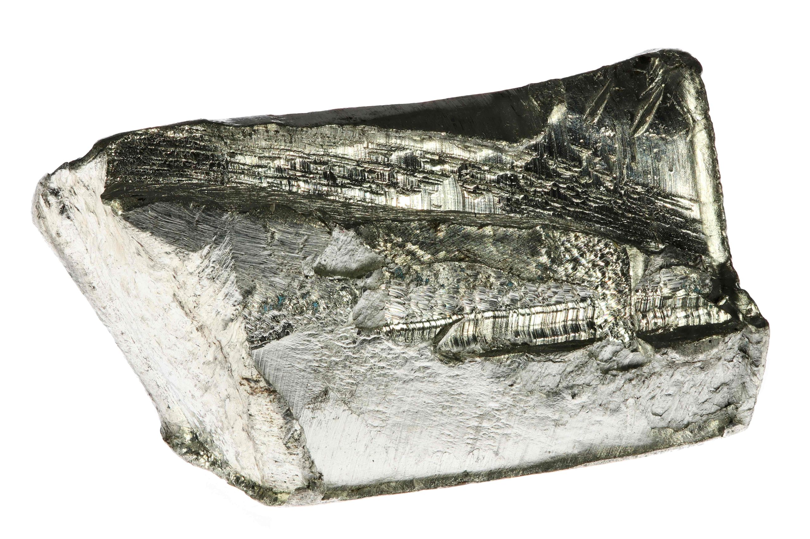

| Property |
Value |
| Element Name |
Tin |
| Atomic Mass |
118.69 g/mol |
| Atomic Number |
50 |
| Number of Isotopes |
20 |
| Isotope Mass Numbers |
120, 118, 116 (most abundant in nature) |
| Melting Temperature |
232 °C |
| Boiling Temperature |
2270 °C |
| Density |
7.30 g/cm³ |
| Electronegativity |
1.8 |
| Year of Discovery |
1800 BC |
| Abundance |
2 ppm (parts per million) |
| Characteristics |
Shiny white-silver metal with bluish tones, soft and malleable. Resistant to corrosion due to a protective oxide layer. |
| Technological Applications |
- Widely used in soldering for electronics, connecting components on printed circuits.
- Present in touchscreen technology with indium oxide.
- Coating steel and iron to prolong material lifespan, especially in food packaging.
- Important in chemical industries as a catalyst in various reactions.
|
| Major Deposit Locations |
Extracted in 35 countries, including China, Peru, Bolivia, Australia, Spain, and England, with most deposits in Southeast Asia. |
| Health Effects |
Small amounts can be absorbed through food, respiration, or skin. Can cause immune disorders, liver and brain damage, and acute effects like headaches and nausea. |
| Environmental Effects |
Spreads through water systems, harming aquatic ecosystems by affecting fungi, algae, and plankton, with negative impacts on marine life. |
